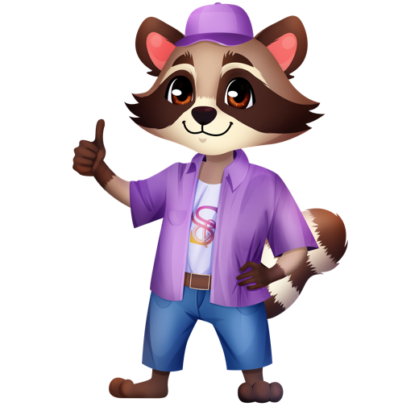

Speak & Smile
Тренажёр подготовки к ОГЭ и ЕГЭ по английскому — серьёзная подготовка в формате, в который хочется возвращаться каждый день.
Что это
Мобильное приложение, где подросток готовится к экзамену по английскому: тренирует грамматику, лексику, чтение и письмо. Задания — из официального банка ФИПИ, проверка письма — искусственным интеллектом по реальным критериям. Внутри — «по-взрослому», но с игровой мотивацией: серия дней, очки, уровни. Работает прямо в телефоне, без VPN, данные хранятся на устройстве.
Что умеет
📝 Грамматика и словообразование
Дриллы по банку ФИПИ: сотни заданий по темам, с пояснением «почему такая форма» простым языком.
📖 Чтение
Все форматы ОГЭ и ЕГЭ (соответствие заголовков, вставка частей, выбор ответа). Эталонные ключи, разбор и подсветка опорных предложений в тексте.
✍️ Письмо и эссе
Личное письмо, e-mail, эссе. ИИ-проверка по критериям ФИПИ: баллы, разбор ошибок «было → стало», исправленный вариант.
🗂 Тематический словарь
2000+ слов и выражений по всем темам кодификатора. Флэшкарты с умным повторением и ежедневной нормой слов.
Фишки и особенности
- Честная ИИ-проверка письма по реальным критериям ФИПИ — как живой эксперт.
- Пояснения простым языком + подсветка нужного предложения прямо в тексте.
- Геймификация: серия дней 🔥, очки XP, уровни, «Герой дня», заморозка серии.
- Словарь по кодификатору: повторение по научному методу (интервалы), 15 слов в день.
- Поиск по словарю прямо во время письма — забыл выражение, нашёл, применил.
- Архив «Мои работы» — перечитать свои письма перед экзаменом, виден объём труда.
- Задания из банка ФИПИ с эталонными ответами, проверка закрытых заданий — мгновенно и офлайн.
- Без VPN и без рекламы, работает с телефона, тема день/ночь, маскот Спики.
Как это выглядит
Мокапы в стиле приложения. Реальные скриншоты можно вставить сюда позже.
Как рассказать детям и родителям
🦝 «Готовься к экзамену как в игре»
- Заходишь каждый день, держишь серию и качаешь уровень — как в любимой игре, только прокачиваешь английский.
- Написал письмо — сразу видишь баллы и где подтянуть, без ожидания учителя.
- 15 слов в день — и словарный запас растёт сам собой.
- Всё в телефоне: 15 минут в транспорте — и день закрыт.
👨👩👧 Для родителей
- Объективно: задания и критерии — официальные (ФИПИ), проверка письма — по тем же правилам, что на экзамене.
- Виден прогресс: освоенные слова, средний балл письма, серия дней — всё на экране прогресса.
- Безопасно: без рекламы, без чужих чатов; данные — на устройстве.
- Регулярность без давления: понятная дневная норма формирует привычку заниматься.